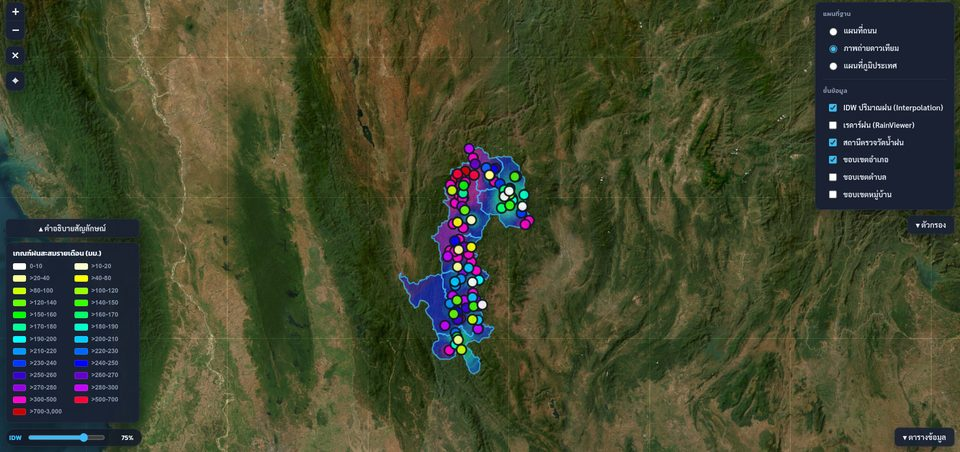
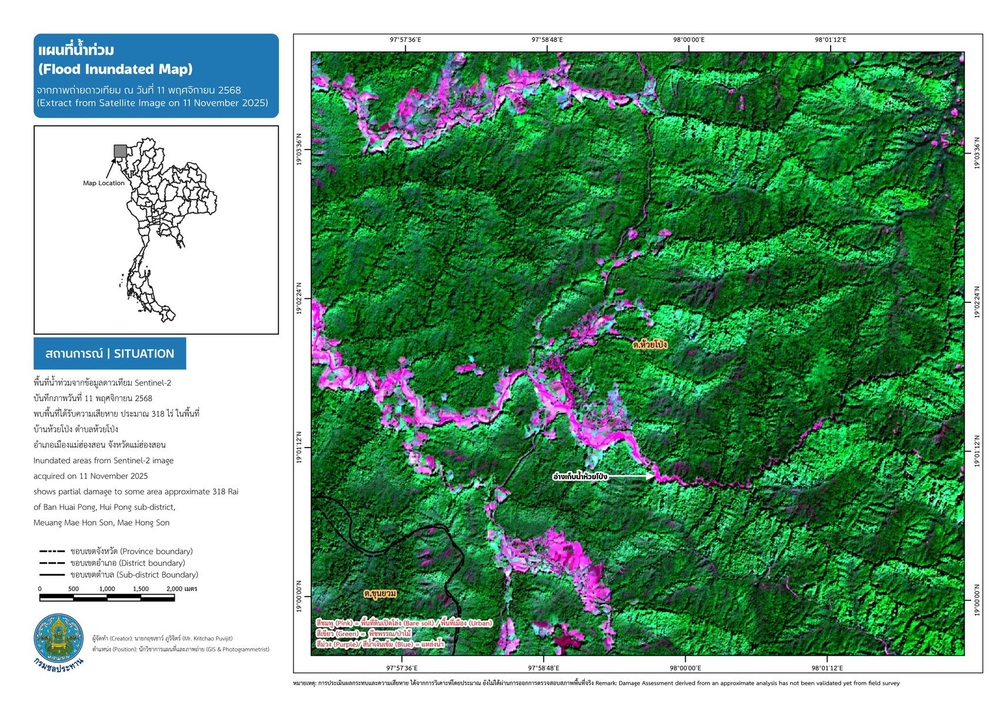
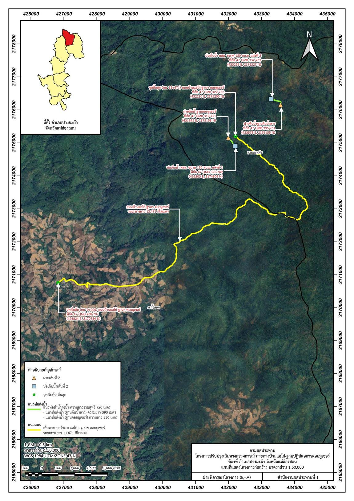

ผลงานคัดสรรเชิงประจักษ์
คลิกเพื่อดูรายละเอียดของแต่ละผลงาน

MHS Water — ระบบติดตามสถานการณ์น้ำแบบเรียลไทม์
เว็บแอปแสดงระดับน้ำและปริมาณฝนในพื้นที่จังหวัดแม่ฮ่องสอนแบบเรียลไทม์ เชื่อมข้อมูลจาก ThaiWater API และเรดาร์ฝนเข้ากับแผนที่เชิงโต้ตอบ (ใช้งานได้จริง)

วิเคราะห์ความเสียหายอ่างเก็บน้ำห้วยโป่งจากพายุทาจิกิ
เปรียบเทียบภาพถ่ายดาวเทียม Sentinel-2 ก่อน-หลังพายุทาจิกิ ที่ทำให้อ่างเก็บน้ำห้วยโป่งเสียหายและสะพาน ทล.108 ขาด (ใช้งานได้จริง)

สำรวจภูมิประเทศด้วย UAV อ่างเก็บน้ำ-สะพานห้วยโป่ง
บินสำรวจด้วยโดรน DJI Air 2S ประมวลผลด้วย Metashape/WebODM ผลิต Point Cloud, DEM/DSM และ Orthomosaic พื้นที่เสียหายจากพายุทาจิกิ

จัดทำแผนที่ภูมิประเทศและอุทกศาสตร์ จ.แม่ฮ่องสอน
แผนที่ระดับความสูง (Hypsometric Map) ครบทั้ง 7 อำเภอ พร้อมแผนที่ปริมาณฝนเฉลี่ยสะสมรายปีทั้งจังหวัด
จัดทำแผนที่ขออนุญาตใช้พื้นที่ก่อสร้างฝาย
ผลิตแผนที่และเอกสารประกอบสำหรับขออนุญาตใช้พื้นที่ก่อสร้างโครงสร้างชลประทาน ตามมาตรฐานของกรมชลประทาน

ขออนุญาตทำถนนชายแดน จัดหาน้ำ ฉก.สิงหนาท
แผนที่ขออนุญาตถนนเข้าฐานปฏิบัติการชายแดน 4 เส้นทาง พร้อมจัดหาน้ำสนับสนุนหมู่บ้าน ร่วมกับโครงการชลประทานแม่ฮ่องสอน